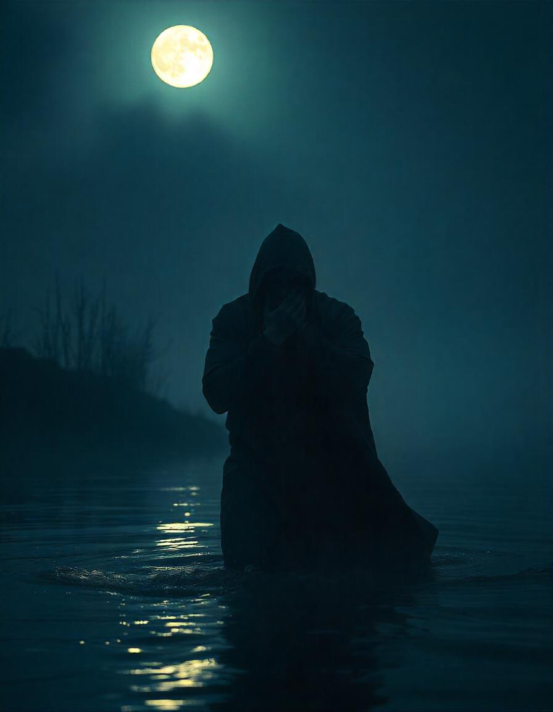
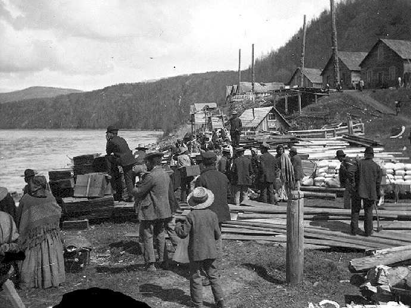

.jpg)

Basic Rules in Gitxsan culture
- When there is a death in the comunity, out of respect people are to stay in at night.
- Never whistle at night.
- Belief is power, when you put your beliefs into anything you give that belief power.
- Thinking bad of someone can create bad medicine.
- speaking about Haldegwet at night permits them to hear all you are saying in that context.
- Haldegwet cannot enter a home without permission.
- If a household family member passes, all the mirrors in the house must be covered.
Creatures and legends
There are many creatures and entities in First nations culture, some are common and some are spesific to the area. This is about Gitxsan legends and creatures.
 
Gitxsan Creatures
- Otter (trickster/Shapshifter)
- Owl (messenger)
- Sasquatch
- Haldegwet (witch)
In Gitxsan culture the trickster is the Otter. The otter is known to take the form of a person you are thinking of or missing if you are near the river at night. They can shapeshift but they cannot change thier teeth, so when by the river at night if you are aproched by someone you know who are covering thier mouth that is how you can tell that it is an otter. By calling the otters name in Gitxsan three times you can turn it back to it's orriginal form.
Owls are a bad omen in our culture, having one outside your house hooting in the night means that death is coming for someone that lives there. Some people belive that if you kill the owl that death won't follow the owl and no one will die after the owl is gone. Also talking to an owl is belived to call death upon yourself, if it hoots back after you speak to it you have to keep talking to the owl until it leaves otherwise the owl omen of death will follow you.
The Sasquatch is a curious thing in Gitxsan culture, if thier population falls they are known to confuse people who go into the forest alone. By confusing the lost person the person goes mad and slowly becomes one of them. We also Have a story that goes with a Totem pole about a guy named Nekt, he grew to an absurd size and wore all furs. After leaving the village he was known to come back now and then and the people woulld see trees move out of the way as he walked down the mountain; so the villagers would leave piles of fish out as an offering to him.
The Gitxsan people have certain ones in the comunity who are known to be Healers, Healers are talented in working with others and can learn diffrent healing techniques that have been passed down. There is another way a healer can end up, by going down the wrong path. This is known as a Haldegwet, saying the word invites them in to hear what you are talking about; and a Haldegwet only has to think bad things about you to hurt. Not much is known about what they can or cannot do but they are feared, and often some are accused of being one since not much is known about how to know if someone is one.
Fear & How It is Apart of Our Culture
In every culture there are stories myths and legends, and with them comes teachings lessons and morals. Before we had science and Religion we had our stories, about creatures that come out at night. About Things that can hear and see you when you do or say bad things. For the Gitxsan it is the Trickster who will grab you if your near the river at night, The spirits who wonder the village at night for 2 weeks after passing, and the Haldegwet who can temp hurt and twist your thoughts and will if your to negative. These are the basis in morals we all were taught growing up. In every culture there are ways of using fear to teach people a way of conducting ones self in order to learn to respect our elders, behave, be kind, stay clear of dangers we don't understand yet, and learn about the power of beliefs as we grow up. Some of these fears and beliefs never leave us, some people pass them on simply as a tool for learning, and most truely belive everything they were told as a child. Either way we are all entitled to our own beliefs with no judgement. The Psychology of Fear.